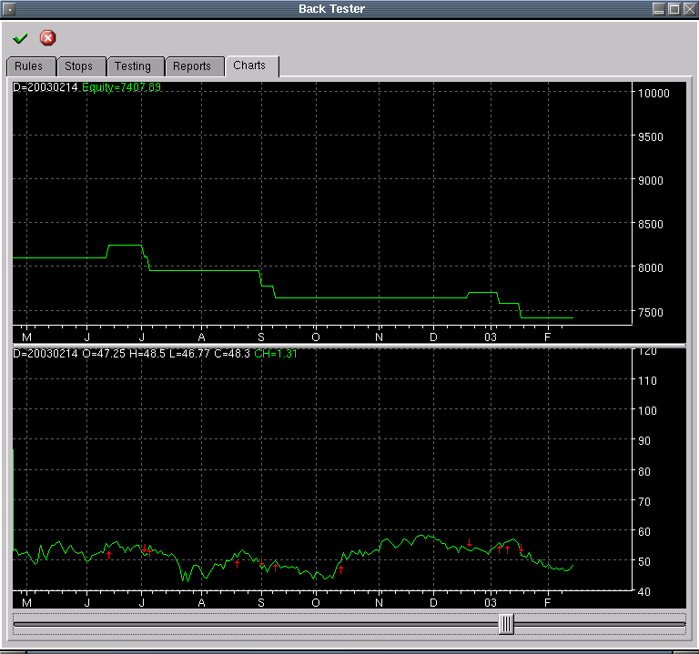

Back Tester Charts
This is where charts of the test will be found. There are 2 charts. The
top chart is a plot of the account equity during the life of the test. The
lower chart is a close plot marked by buy and sell arrows indicating where
each trade was made.
This is an example of a bad trading rule. Man, I took a bath on this one.
Ideally, you want the equity plot to rise steadily showing steady profits
being accumulated.
